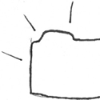

Christian Koch
on GitHub
A little about me
Hey people. I'm a Rubyist and a student at University of California, Riverside. Apart from programming, I enjoy filmmaking/cinema, making music, drawing, writing, art in general, theater tech, coffe, and pearl milk tea!
You can find me at deviantART and YouTube, too.
My public repos
turntable
The pure Ruby alternative to relational databases
muro
Another Ruby blogging engine. Inspired by Italia!
khalana
Flaunt your source code with this CMS
pirates-ninjas
A super-quick Sinatra app

entries_visible
A little tiny revision to the Ruby Dir class